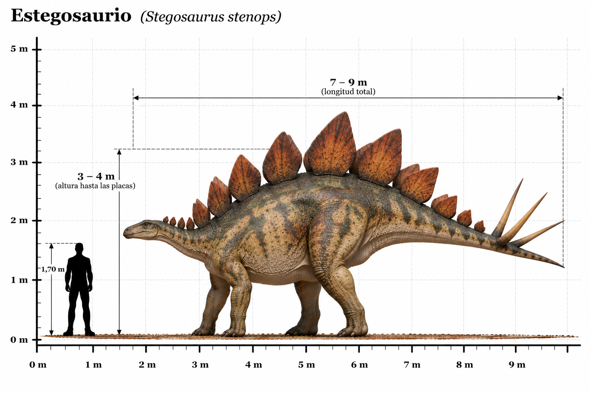

Stegosaurus stenops

El Stegosaurus stenops fue un dinosaurio herbívoro que habitó América del Norte durante el Jurásico tardío, hace aproximadamente entre 155 y 150 millones de años. Su característica más reconocible era la doble hilera de grandes placas óseas que recorrían su espalda desde el cuello hasta la cola. La función exacta de estas placas continúa siendo objeto de investigación. Se han propuesto funciones relacionadas con la exhibición visual, el reconocimiento entre individuos y la regulación de la temperatura corporal. También poseía cuatro largas púas en el extremo de la cola, conocidas como thagomizer, que probablemente utilizaba para defenderse de grandes depredadores como Allosaurus. Su cuerpo era robusto, con las patas traseras más largas que las delanteras, una cabeza relativamente pequeña y un pico adaptado para consumir vegetación. A pesar de su gran tamaño, tenía un cerebro pequeño en proporción a su cuerpo, algo habitual en varios dinosaurios herbívoros.
- Grupo: Estegosaurio.
- Familia: Stegosauridae (estegosáuridos).
- Período: Jurásico tardío (hace aproximadamente 155–150 millones de años).
- Alimentación: Herbívoro.
- Longitud: Aproximadamente 6–7 metros.
- Altura: Aproximadamente 2,5–3 metros hasta la parte superior de las placas dorsales.
- Localización: América del Norte (actual Estados Unidos).
